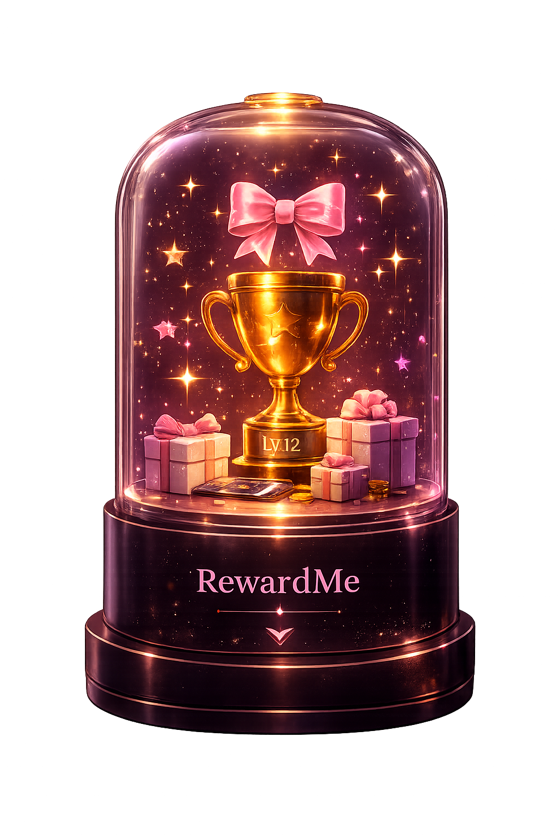
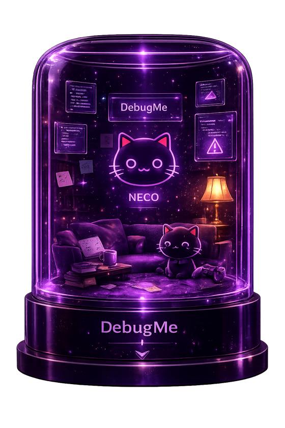
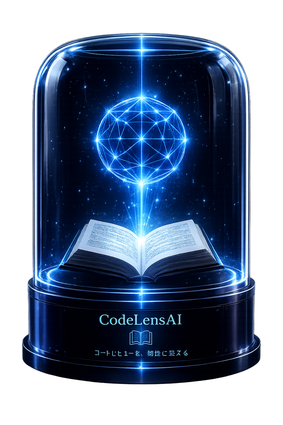
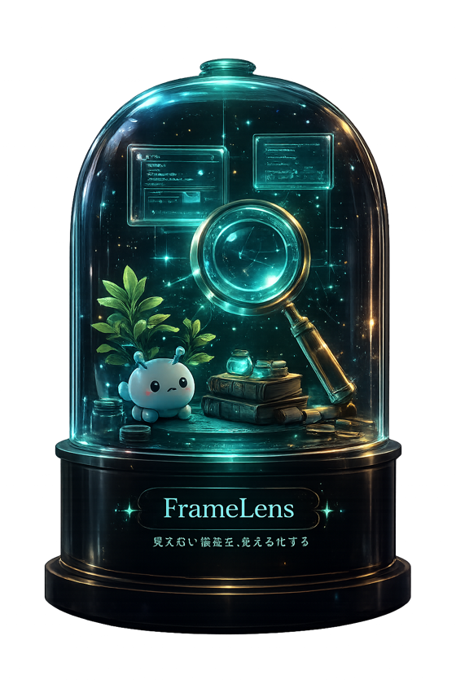
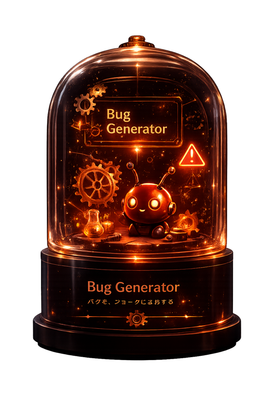

Exhibit 01 · Playful
RewardMe
Joy.
タスクを、ごほうびに変える
Turn everyday tasks into lasting motivation.
こなすほど、ごほうびが増える。続けたくなるタスク管理。
個人開発 · 「続かない」を"ごほうび"で解決 · Hotwireで非同期にごほうび付与
Ruby on Rails · Hotwire · Stimulus · PostgreSQL
Portfolio Collection · 2026





Exhibit 01 · Playful
Joy.
タスクを、ごほうびに変える
Turn everyday tasks into lasting motivation.
こなすほど、ごほうびが増える。続けたくなるタスク管理。
個人開発 · 「続かない」を"ごほうび"で解決 · Hotwireで非同期にごほうび付与
Ruby on Rails · Hotwire · Stimulus · PostgreSQL

Exhibit 02 · Reflection
Listen.
悩みを、ログに変換する
Organize your thoughts before fixing your problems.
まず、聴く。あなたの詰まりを、たしかなログへ。
個人開発 · 詰まりを言語化して整理する · SSEでAIの応答をストリーミング
Ruby on Rails · Claude API · SSE · Hotwire

Exhibit 03 · Flagship
Read.
コードレビューを、知性に変える
Transform code reviews into lasting knowledge.
ソフトウェアを"読める"場所へ。差分に、意味を残す。
個人開発 · 画面は実在の人気OSS「chalk」をAIがレビュー・採点した例 · Claude APIで差分解析 / Docker
Laravel · Claude API · PostgreSQL · Docker

Exhibit 04 · Research
See.
見えない構造を、見える化する
Make invisible structures visible.
見えない構造を、目に見えるかたちへ。
個人開発 · 見えない構造を可視化する · C++をWebAssembly化しブラウザで描画
C++ · OpenGL · WebAssembly · WebGL2 · Emscripten

Exhibit 05 · Experimental
Play.
バグを、遊びに変える
Learn through bugs. Create with curiosity.
こわいエラーを、遊べるものに。開発者のいたずら箱。
個人開発 · エラーを学びの"遊び"に変える · Rails+Stimulusで動的に生成
Ruby on Rails · Hotwire · Stimulus
The Creator
Create.
アイデアを、かたちに。
Designing software people remember.